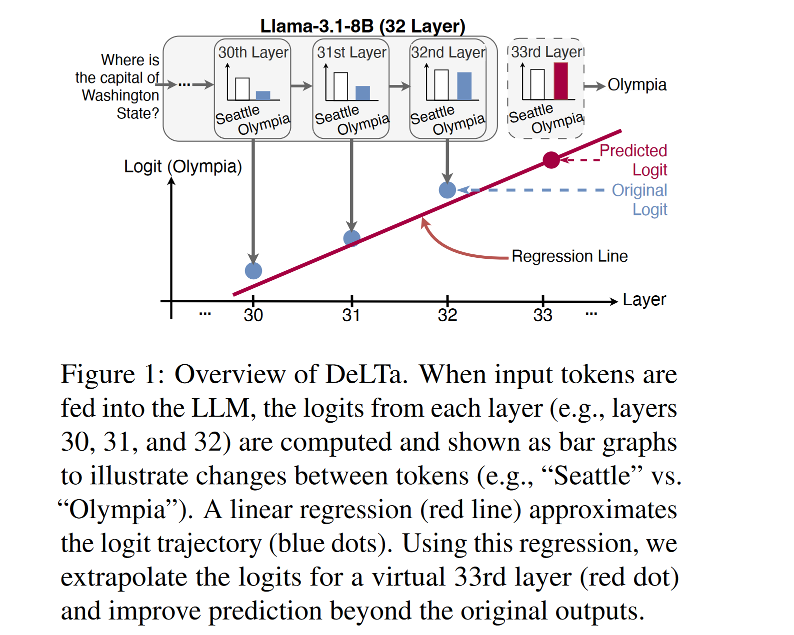

Extrapolate All The Things - Small-To-Big Extrapolation For LLMs
In a research chat yesterday I spoke about a fun thread of research, sparked by a recent paper: Model Extrapolation Expedites Alignment. The idea of the paper is simple but fun: take an LLM that’s had some SFT done, do a little DPO (or other ‘alignment’ technique of your choice), look at the change in the weights, then extrapolate in that direction to get an even more aligned model, saving compute. In other words, if you mix the starting model with a DPO-trained one based on a scalar alpha, you start with alpha=0 at the performance of the starting model, then as you increase it to 1 your performance rises too, until you hit the performance of the DPO-trained model. And if you use alpha > 1, you get a model that is even better than the DPO-trained one! At least, if you didn’t do much DPO training - say, 10 or 20% of what you’d normally do. There’s a few takeaways here related to how little the final alignment training is doing in cases like this, but the core idea is one that is worth exploring more generally - namely, getting better performance by interpolating from a worse model/prediction to a better one and then extrapolating beyond it. In this post I’ll explore some related ideas, and my own experiments extrapolating from a small model to a big model to eke out even more performance. I’ve also got a video of me running through these papers and then taking you on the journey of trying the experiments, so you can get a picture of how fun this kind of research can be.
Past Work
For me, the classic example of this kind of idea is ‘Classifier Free Guidance’ in diffusion models. You interpolate between the prediction from an unconditional model and a conditional one, and then extrapolate beyond it. This is a very powerful technique, and it’s been used in a lot of different ways. Introduced by Salimans and Ho in 2021, it gained popularity through the GLIDE paper which used it to get open source text-to-image diffusion working well early on in the diffusion model revolution, where it has since become a staple of pretty much all subsequent text-to-image systems.
I remember Katherine Crawson and others discussing extending the idea to LLMs and AR models in general soon after that - and sure enough a literatre search finds papers like Stay on topic with Classifier-Free Guidance that do just that, comparing the preictions with and without a piece of context in the prompt and doing CFG-like scaling of the logits before sampling. (I found this paper after re-inventing the idea to myself and going looking).
Another set of works doing something similar is DOLA: DECODING BY CONTRASTING LAYERS IMPROVES FACTUALITY IN LARGE LANGUAGE MODELS which contrasted predictions based on early vs late layers in a model for improved factuality (I did an experiment back then in 2023 extending it with a CFG-like guidance scale) and DeLTa: A Decoding Strategy based on Logit Trajectory Prediction Improves Factuality and Reasoning Ability which did something similar by fitting a regression line through the preds of the model at different layers:

Aside: I found the delta paper while using the Ai2 Paper Finder tool to look for DoLa since I was blanking on the name, it’s an incredible lit search tool that you should definitely try out asap if you do research!
Anyway, today I thought I’d try the idea of using small -> big model and doing the extrapolation between their logits. I know we chatted about this back then in 2023, I know I talked about it on Twitter back then too and maybe there was even a paper? But let’s pretend we’re doing novel research it’s way more fun that way :D
Experiment
In this notebook I set up the experiment. The key step is this: final_logits = (1.0 - alpha) * logits1 + alpha * logits2. Where logits1 come from a smaller model (Qwen 2.5 1.5B) and logits2 come from a larger model (Qwen 2.5 3B). Once we validate that it’s all working, I load up some questions from GSM8K and get the scores like so:
alphas = [0, 0.3, 0.7, 1, 1.2, 1.5, 2]
scores = []
for alpha in alphas:
total, correct = 0, 0
for i in tqdm(range(100)): # Iterate through 100 questions
q, a = data_list[i]['question'], int(data_list[i]['answer'].split("#### ")[-1])
model_a, _ = get_answer(q, alpha)
if model_a == a: correct += 1
total += 1
score = correct * 100 / total
scores.append(score)
print(f"Alpha: {alpha}, Score: {score}")The result:

Womp womp waaaa. An early test with fewer samples had such a nice peak at alpha = 1.2 making it look like the idea worked great! Alas - in this case at least perhaps it was too good to be true. I’ll update this post if I get a more positive result trying this at a larger scale.
Conclusion
It might sound a little silly to effectively fit a curve for the preds of a few smaller models to try to predict what a bigger one might do, but I remain hopeful there might be places this works… And I can imagine scenarios where you already have both sets of preds or can get them cheaply - perhaps a speculative sampling scenario. It’s also potentially a lot more useful when you have good/bad models in other ways. For e.g. the use-case I’m excited about is tweaking the context/training. Say you’re working on a model for FastHTML. Since it’s a new framework it isn’t really in the training data, so models tend to not know it and try to answer about FastAPI or something instead. We could fine-tune a model on what examples we have, or pop some docs in context, but even then the models might really want to default to the better-known frameworks. With this, we could contrast a model with no training/context with our fine-tuned one, and then extrapolate to get a model that is even more likely to do things the “right” FastHTML way. And so on.
Anyway, I hope this post and the video inspire you to run your own experiments - there are so many directions you can take this! If you try anything fun do let me know. Best. Johno.
PS: I ran this on Qwen 7B -> 14B too, with similarly underwhelming results.
PPS: Full code
For the record, here’s the code that produced the data for the first graph above
import torch
import transformers
from transformers import AutoModelForCausalLM, AutoTokenizer
import warnings
import httpx, json
import re
from tqdm.auto import tqdm
# Suppress irrelevant warnings
warnings.filterwarnings("ignore", category=UserWarning)
transformers.logging.set_verbosity_error() # Hide tokenizer warnings
# --- Configuration ---
DEVICE = "cuda" if torch.cuda.is_available() else "cpu"
print(f"Using device: {DEVICE}")
# --- Load Models ---
model_name = "Qwen/Qwen2.5-1.5B-Instruct"
tokenizer = AutoTokenizer.from_pretrained(model_name)
terminators = [tokenizer.eos_token_id]
if tokenizer.pad_token is None:
tokenizer.pad_token = tokenizer.eos_token
model1 = AutoModelForCausalLM.from_pretrained(
model_name,
torch_dtype=torch.bfloat16).to(DEVICE).eval();
model2 = AutoModelForCausalLM.from_pretrained(
"Qwen/Qwen2.5-3B-Instruct",
torch_dtype=torch.bfloat16
).to(DEVICE).eval();
def get_next_token_logits(model, input_ids, past_key_values):
"""
Performs a forward pass and returns the logits for the *next* token,
along with the updated past_key_values.
"""
with torch.no_grad():
outputs = model(
input_ids=input_ids,
past_key_values=past_key_values,
return_dict=True
)
# Logits are for the *next* token prediction (shape: [batch_size, vocab_size])
next_token_logits = outputs.logits[:, -1, :]
updated_past_key_values = outputs.past_key_values
return next_token_logits, updated_past_key_values
def contrastive_generate(
model1,
model2,
tokenizer,
messages,
alpha: float,
max_new_tokens: int = 50,
temperature: float = 0.7,
terminators = None
):
input_ids = tokenizer.apply_chat_template(
messages,
add_generation_prompt=True,
return_tensors="pt"
).to(DEVICE)
past_key_values1 = None
past_key_values2 = None
generated_ids = []
_, past_key_values1 = get_next_token_logits(model1, input_ids, None)
_, past_key_values2 = get_next_token_logits(model2, input_ids, None)
# --- Generation Loop ---
current_input_ids = input_ids[:, -1:] # Last token in inputs
for _ in range(max_new_tokens):
logits1, past_key_values1 = get_next_token_logits(
model1, current_input_ids, past_key_values=past_key_values1 # Use cache, mask isn't needed for single token
)
logits2, past_key_values2 = get_next_token_logits(
model2, current_input_ids, past_key_values=past_key_values2 # Use cache, mask isn't needed for single token
)
# Key step:
final_logits = (1.0 - alpha) * logits1 + alpha * logits2
# 3. Apply Temperature and Sample
if temperature > 0:
scaled_logits = final_logits / temperature
probs = torch.softmax(scaled_logits, dim=-1)
next_token_id = torch.multinomial(probs, num_samples=1)
else:
# Greedy decoding if temperature is 0 or less
next_token_id = torch.argmax(final_logits, dim=-1, keepdim=True)
# 4. Check for EOS token
if terminators is not None and next_token_id.item() in terminators: break
# 5. Append generated token and prepare for next step
generated_ids.append(next_token_id.item())
current_input_ids = next_token_id # Next input is just the token we sampled
# --- Decode and Return ---
return tokenizer.decode(generated_ids)
# Load eval data
url = "https://raw.githubusercontent.com/openai/grade-school-math/refs/heads/master/grade_school_math/data/test.jsonl"
response = httpx.get(url)
data_list = []
for line in response.text.strip().split('\n'):
item = json.loads(line)
data_list.append(item)
def get_answer(question, alpha):
messages = [
{"role": "system", "content": "Answer the following question, end your response with 'final answer: your_answer'."},
{"role": "user", "content": question},
]
alpha = 1.5
answer_text = contrastive_generate(model1, model2, tokenizer, messages, alpha,
max_new_tokens=300, terminators=terminators, temperature=0.7)
numbers = re.findall(r'-?\d+(?:\.\d+)?', answer_text)
return int(float(numbers[-1])) if numbers else None, answer_text
alphas = [0, 0.3, 0.5, 0.7, 1, 1.1, 1.2, 1.5, 2]
scores = []
for alpha in alphas:
total, correct = 0, 0
for i in tqdm(range(600)):
q, a = data_list[i]['question'], int(data_list[i]['answer'].split("#### ")[-1].replace(",", ""))
model_a, _ = get_answer(q, alpha)
if model_a == a: correct += 1
total += 1
score = correct * 100 / total
scores.append(score)
print(f"Alpha: {alpha}, Score: {score}")
print(f"Scores for different alphas: {scores}")
# Scores for different alphas: [71.0, 72.5, 72.83333333333333, 74.16666666666667, 74.5, 74.16666666666667, 73.66666666666667, 73.83333333333333, 72.83333333333333]